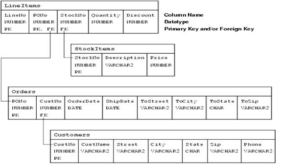

Using Oracle Data Pump to Migrate to a Sharded Database
Using the examples and guidelines provided in the following topics, you can extract DDL definitions and data from the source database with the Oracle Data Pump export utility, and then use the Data Pump import utility against the database export files to populate the target sharded database.
If you already created the schema for your sharded database, you can go directly to the data migration topic.
Migrating a Schema to a Sharded Database
Transition from a non-sharded database to a sharded database requires some
schema changes. At a minimum, the keyword SHARDED or
DUPLICATED should be added to CREATE TABLE statements.
In some cases, the partitioning of tables should be changed as well, or a column with the
shading key added.
To properly design the sharded database schema, you must analyze the schema and workload of the non-sharded database and make the following decisions.
- Which tables should be sharded and which should be duplicated
- What are the parent-child relationships between the sharded tables in the table family
- Which sharding method is used on the sharded tables
- What to use as the sharding key
If these decisions are not straightforward, you can use the Sharding Advisor to help you to make them. Sharding Advisor is a tool that you run against a non-sharded Oracle Database that you are considering to migrate to an Oracle Sharding environment.
To illustrate schema and data migration from a non-sharded to sharded database, we will use a sample data model shown in the following figure.
Figure 7-1 Schema Migration Example Data Model

Description of "Figure 7-1 Schema Migration Example Data Model"
The data model consists of four tables, Customers, Orders, StockItems, and LineItems, and the data model enforces the following primary key constraints.
-
Customer.(CustNo) -
Orders.(PONo) -
StockItems.(StockNo) -
LineItems.(LineNo, PONo)
The data model defines the following referential integrity constraints.
-
Customers.CustNo -> Orders.CustNo -
Orders.PONo -> LineItems.PONo -
StockItems.StockNo -> LineItems.StockNo
The following DDL statements create the example non-sharded schema definitions.
CREATE TABLE Customers (
CustNo NUMBER(3) NOT NULL,
CusName VARCHAR2(30) NOT NULL,
Street VARCHAR2(20) NOT NULL,
City VARCHAR2(20) NOT NULL,
State CHAR(2) NOT NULL,
Zip VARCHAR2(10) NOT NULL,
Phone VARCHAR2(12),
PRIMARY KEY (CustNo)
);
CREATE TABLE Orders (
PoNo NUMBER(5),
CustNo NUMBER(3) REFERENCES Customers,
OrderDate DATE,
ShipDate DATE,
ToStreet VARCHAR2(20),
ToCity VARCHAR2(20),
ToState CHAR(2),
ToZip VARCHAR2(10),
PRIMARY KEY (PoNo)
);
CREATE TABLE LineItems (
LineNo NUMBER(2),
PoNo NUMBER(5) REFERENCES Orders,
StockNo NUMBER(4) REFERENCES StockItems,
Quantity NUMBER(2),
Discount NUMBER(4,2),
PRIMARY KEY (LineNo, PoNo)
);
CREATE TABLE StockItems (
StockNo NUMBER(4) PRIMARY KEY,
Description VARCHAR2(20),
Price NUMBER(6,2)
);
Migrating the Sample Schema
As an example, to migrate the sample schema described above to a sharded database, do the following steps.
Migrating Data to a Sharded Database
Transitioning from a non-sharded database to a sharded database involves moving the data from non-sharded tables in the source database to sharded and duplicated tables in the target database.
Moving data from non-sharded tables to duplicated tables is straightforward, but moving data from non-sharded tables to sharded tables requires special attention.
Loading Data into Duplicated Tables
You can load data into a duplicated table using any existing database tools, such as Data Pump, SQL Loader, or plain SQL. The data must be loaded to the shard catalog database. Then it gets automatically replicated to all shards.
Because the contents of the duplicated table is fully replicated to the database shards using materialized views, loading a duplicated table may take longer than loading the same data into a regular table.
Figure 7-2 Loading Duplicated Tables
Loading Data into Sharded Tables
When loading a sharded table, each database shard accommodates a distinct subset of the data set, so the data in each table must be split (partitioned) across shards during the load.
You can use the Oracle Data Pump utility to load the data across database shards in subsets. Data from the source database can be exported into a Data Pump dump file. Then Data Pump import can be run on each shard concurrently by using the same dump file.
The dump file can be either placed on shared storage accessible to all shards, or copied to the local storage of each shard. When importing to individual shards, Data Pump import ignores the rows that do not belong to the current shard.
Figure 7-3 Loading Sharded Tables Directly to the Database Shards
Loading the data directly into the shards is much faster, because all shards are loaded in parallel. It also provides linear scalability; the more shards there are in the sharded database, the higher data ingestion rate is achieved.
Loading the Sample Schema Data
As an example, the following steps illustrate how to move the sample schema data from a non-sharded to sharded database. The syntax examples are based on the sample Customers-Orders-LineItems-StockItems schema introduced in the previous topics.
Note:
You can make Data Pump run faster by using the PARALLEL
parameter in the expdp and impdp commands. For
export, this parameter should be used in conjunction with the %U wild card in
the DUMPFILE parameter to allow multiple dump files be created,
as shown in this example.
expdp uname/pwd@orignode SCHEMAS=uname directory=expdir dumpfile=samp_%U.dmp logfile=samp.log FLASHBACK_TIME=SYSTIMESTAMP PARALLEL=4 The above command uses four parallel workers and creates four dump files with suffixes _01, _02, _03, and _04. The same wild card can be used during the import to allow you to reference multiple input files.
Migrating Data Without a Sharding Key
As an example, the following steps illustrate how to migrate data to a sharded table from a source table that does not contain the sharding key.
The examples of the Data Pump export and import commands in the previous topic do not include the LineItems table. The reason is that this table in the non-sharded database does not contain the sharding key column (CustNo). However, this column is required in the sharded version of the table.
Because of the schema mismatch between the non-sharded and sharded versions of the table, data migration for LineItems must be handled differently, as shown in the following steps.